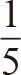

统计学家也是数学家，他们通过收集和分析原始信息，总结出统计数据来，然后根据统计数据得出结论。我们生活的方方面面都依赖于统计数据，从衣服的尺寸到汽车的保险费用，再到生病时医生开具的处方等。
无论你是计算还是分析统计数据，都必须知道数据来自群体还是样本。
群体是指某个集合的所有成员。例如，如果我要研究成年北极燕鸥的翼展，那么这里的群体就是指全部成年北极燕鸥。如果我能测量所有成年北极燕鸥的翼展，我就能计算出关于这个群体的真实统计数字。
但在现实生活中，你不可能去测量每一只成年北极燕鸥，所以我会选取一个样本，并且希望样本的统计结果与群体的统计结果相似。所以，采样的方法就变得很重要，因为要避免任何偏颇。例如，如果我选取了从某个岛屿上捕获的所有燕鸥作为样本，那么有可能我的样本中的所有燕鸥都是以某种方式相关联的，这可能会影响它们的翼展。其他岛屿同种群体的翼展，可能明显地比这个岛屿的统计结果长或短。
抽样方法五花八门，就看你打算花多少时间、精力和金钱了。遗憾的是，我们每天遇到的统计数据很少会与抽样方式一起公布。人们有时会故意使用错误的抽样方法，从而产生有偏见的统计数据。英国前首相本杰明·迪斯雷利（Benjamin Disraeli，1804—1881）曾说过一句名言：“有三种谎言：谎言、糟糕透顶的谎言和统计数据。”
最常用的一种统计数据是平均数。
平均数通常基于这样的假设，即数据值向中心区域集中，统计学家称为中心趋势。举例来说，英国女性的身高大多不会明显偏离164厘米这个平均身高数值。平均数就是当把所有数据加起来，除以数据总数后得到的值。实际上，我们所分享的数据是样本所属集合元素的平均数。例如，我想计算我的五人制足球队队员的平均身高。首先，我测量了大家的身高（单位：厘米）：
167, 168, 175, 184, 191
五人的身高总和是：167+168+175+184+191=885厘米。
将数据除以5得到：885÷5=177厘米。
请注意，团队中没有哪个人的身高是177厘米，由此可见，平均数不见得是最合适的值。有一段时间，英国每个家庭平均有2.4个孩子，这个值曾经被嘲笑，因为孩子的数量应该是整数，而不可能是小数。数值数据可以分为两类：连续数据，可以取给定范围内的任何值（如高度或重量）；离散数据，只能取该范围内的某些值，如儿童人数或鞋子尺寸。
中位值是将数字按顺序排列后位于中间的基准数值，我们可以按高度或重量（或其他标准）将样本排列，然后选择中间的值。对于我的足球队来说，中位值是175厘米。如果我们有替补队员，那么数据的个数是6，我们可以将第三个和第四个数据的平均数作为中位值。
对于不以数值形式呈现的数据来说，我们还可以用众数这个值来统计。这个数值衡量的不是中心趋势，而是所有数据中出现次数最多或最频繁的值。
平均值的含义非常好理解，但很多时候，我们还希望了解更多关于数据如何分布的信息。是不是所有值都趋近于平均值，还是说它刚好位于两组分散数据的中央？下文中，我会具体介绍相关的分析方法。
2012年，英国学校总督察长曾说过，英国

的小学生英语水平都没有达到全英平均水平，因此需要提高标准。美国前总统德怀特·艾森豪威尔（Dwight Eisenhower，1890—1969）也犯过类似的错误。他对半数美国公民的智商低于平均水平表示非常震惊。
拜托，正确理解平均数，才能更好地提高标准！